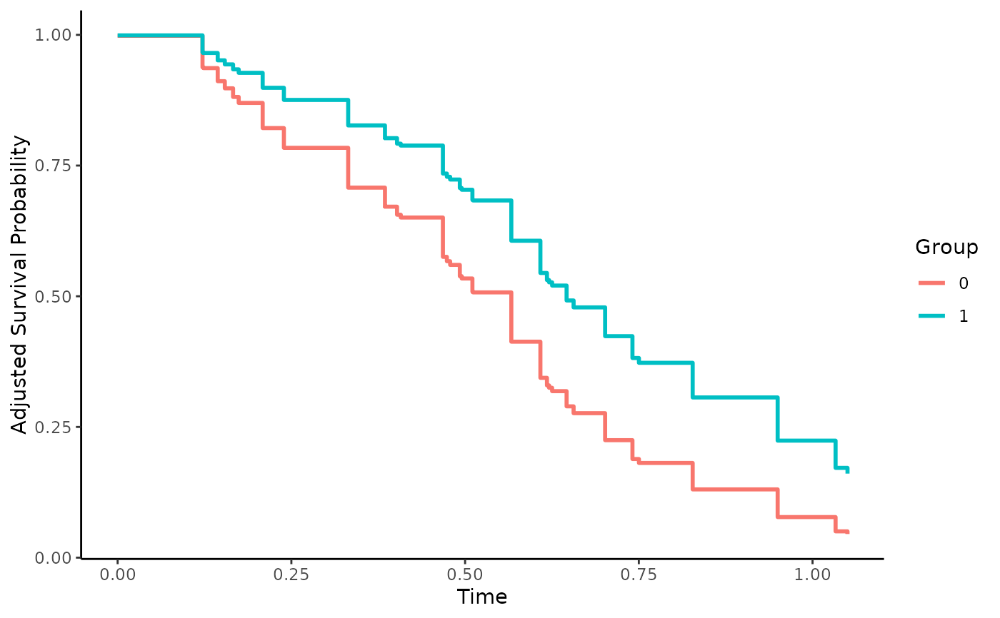

Direct Adjusted Survival Curves using Pseudo-Values
surv_direct_pseudo.RdThis page explains the details of estimating direct adjusted survival curves using pseudo-values for single event time-to-event data (method="direct_pseudo" in the adjustedsurv function). All regular arguments of the adjustedsurv function can be used. Additionally, the outcome_vars argument has to be specified in the adjustedsurv call. Further arguments specific to this method are listed below.
Arguments
- outcome_vars
[required] A character vector of column names specifying variables to be used when modeling the outcome mechanism. See details and examples.
- type_time
A character string specifying how the time should be modeled. Possible values are
"factor"(modeling each point in time as a separate variable, the default),"bs"(modeling time using B-Splines) or"ns"(modeling time using natural splines).- spline_df
The number of degrees of freedom used for the natural-spline or B-spline function. Ignored if
type_time="factor". Defaults to 5.- censoring_vars
An optional character vector specifying variables in
data. Those are used in the calculation of inverse probability of censoring weighted pseudo observations. See?pseudo_aaregfor more information. Set toNULL(default) to use standard pseudo-values without corrections for dependent censoring instead.- ipcw_method
The specific method used in the calculation of inverse probability of censoring weighted pseudo observations. Can be either
"binder"(default) or"hajek". See?pseudo_aaregfor more information. Ignored ifcensoring_vars=NULL.
Details
Type of Adjustment: Requires a character vector of variable names used to model the outcome mechanism (internally uses
geese).Doubly-Robust: Estimates are not Doubly-Robust.
Categorical groups: Any number of levels in
variableare allowed. Must be a factor variable.Approximate Variance: Calculations to approximate the variance and confidence intervals are not available. Bootstrapping can still be used to estimate the confidence intervals (see
?adjustedsurv).Allowed Time Values: Allows both continuous and integer time.
Bounded Estimates: Estimates are not guaranteed to be bounded in the 0 to 1 probability range.
Monotone Function: Estimates are not guaranteed to be monotone.
Dependencies: This method relies on the geepack and prodlim packages. Additionally requires the eventglm package if
censoring_varsis specified.
This method works by executing the following steps: (1) First Pseudo-Values for the survival probabilities are estimated for each observation in the dataset and some points in time T. Afterwards (2) a new dataset is created in which every individual observation has multiple rows, one for each point in time of interest. (3) This dataset is used to fit a generalized estimating equations (geese) model, using the Pseudo-Values as independent variable. Next (4) multiple copies of the new dataset are created, one for each possible level of the variable of interest. (5) The variable is then set to one level for all observations in each dataset. (5) The geese model is used to predict the survival probabilities at some points in time T for each observation in all dataset copies. (6) Those estimated probabilities are averaged for each dataset at each point in time, resulting in adjusted survival probabilities for all levels of the group variable at the specified points in time.
It is essentially the same procedure as described in "direct". The only difference is that instead of relying on a coxph model, this method uses Pseudo-Values and a geese model. This can be useful if the data does not conform to some assumptions needed to use the Cox-Regression model (for example the proportional hazards assumption).
When estimating the geese model the ev_time variable is used as a factor by default. This results in one coefficient being estimated for each unique point in time, which can be very slow computationally if there are a lot of unique points in time and/or the dataset has many rows. In these cases it is recommended to use type_time="bs" or type_time="ns", which results in the ev_time being modeled using B-Splines or Natural Splines. Simulation studies indicate that there is little difference in the estimates when an appropriately large number of spline_df is used.
Additionally, covariate-dependent censoring can be accounted for by using inverse probability of censoring weighted pseudo-values (Binder et al. 2014) instead of regular pseudo-values (specified using the censoring_vars and ipcw_method arguments).
Value
Adds the following additional objects to the output of the adjustedsurv function:
pseudo_values: The matrix of estimated pseudo-values.geese_model: The geese model used to make the predictions.
References
Per Kragh Andersen, Elisavet Syriopoulou, and Erik T. Parner (2017). "Causal Inference in Survival Analysis using Pseudo-Observations". In: Statistics in Medicine 36, pp. 2669-2681
Per Kragh Andersen and Maja Pohar Perme (2010). "Pseudo-Observations in Survival Analysis". In: Statistical Methods in Medical Research 19, pp. 71-99
Aris Perperoglou, Willi Sauerbrei, Michal Abrahamowicz, and Matthias Schmid (2019). "A Review of Spline Function Procedures in R". in: BMC Medical Research Methodology 19.46, pp. 1-16
Nadine Binder, Thomas A. Gerds, and Per Kragh Andersen (2014). "Pseudo-Observations for Competing Risks with Covariate Dependent Censoring". In: Lifetime Data Analysis 20, pp. 303-315
Examples
library(adjustedCurves)
if (requireNamespace("geepack") & requireNamespace("prodlim")) {
library(geepack)
library(prodlim)
set.seed(42)
# simulate some data as example
sim_dat <- sim_confounded_surv(n=50, max_t=1.2)
sim_dat$group <- as.factor(sim_dat$group)
# calculate adjusted survival curves, with time as factor
adjsurv <- adjustedsurv(data=sim_dat,
variable="group",
ev_time="time",
event="event",
method="direct_pseudo",
outcome_vars=c("x1", "x2", "x3", "x4", "x5", "x6"),
type_time="factor",
force_bounds=TRUE,
iso_reg=TRUE)
# with time modelled as B-Spline using 5 degrees of freedom
adjsurv <- adjustedsurv(data=sim_dat,
variable="group",
ev_time="time",
event="event",
method="direct_pseudo",
outcome_vars=c("x1", "x2", "x3", "x4", "x5", "x6"),
type_time="bs",
spline_df=5,
force_bounds=TRUE,
iso_reg=TRUE)
# plot the curves
plot(adjsurv)
}
